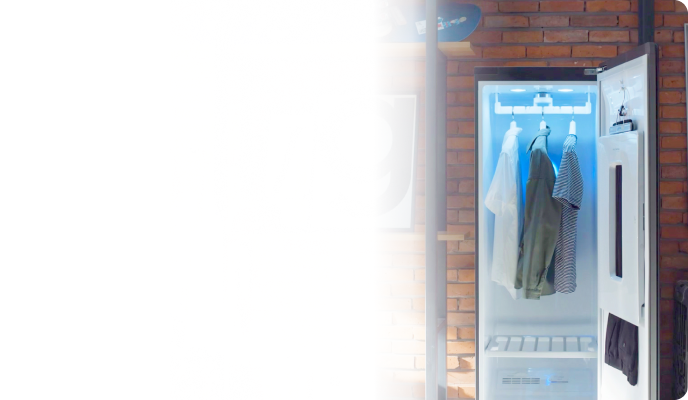
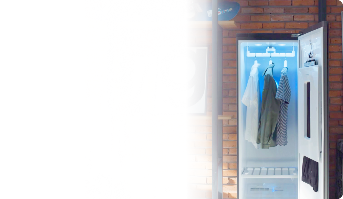

Moins de lavage.
Toujours comme neuf. Du Styler.
Pour les vêtements que vous ne pouvez pas laver tous les jours, mais que vous voulez rafraîchir, le Styler de LG les nettoie à la vapeur.
Conseils pour l’entretien des vêtements

À propos du Styler
Des vêtements à la literie, en passant par les articles plus difficiles à laver,
le Styler couvre toutes les bases de l’entretien des tissus.
-

Literie
-
Jouets en peluche
-
Cuir
-

Robes
-

Manteaux
-
Vestes
rembourrées
Vidéo d’accroche, vidéo principale (à mettre à jour)
Des questions? Posez-les-nous!
-
Le Styler peut être installé dans votre salon, dans votre chambre, dans votre buanderie, partout où vous le souhaitez! Nous vous recommandons de vous assurer qu’il y a suffisamment d’espace au-dessus du Styler ainsi qu’environ 5 cm sur les côtés et à l’arrière pour la ventilation. Il suffit de brancher votre Styler, de remplir le réservoir d’eau et de commencer à l’utiliser! Pour des consignes d’installation plus détaillées, consultez le manuel du produit.
-
Le Styler peut prendre soin d’une vaste gamme d’articles, qu’il s’agisse de vêtements ou d’articles non vestimentaires. Vous pouvez prendre soin de votre literie, des jouets de vos enfants et, bien sûr, de vos vêtements préférés. L’utilisation du Styler convient également à de nombreux types de tissus, y compris la soie, le cuir, le cachemire et la laine. Cela signifie que vous pouvez mettre une chemise en soie qui nécessite un nettoyage à sec seulement dans la même machine qu’un pantalon de yoga, et obtenir les mêmes résultats. Nous vous déconseillons de mettre des chaussures dans le Styler et vous encourageons à toujours vérifier l’étiquette des vêtements et le guide de lavage des articles avant de les mettre dans le Styler. Découvrez d’autres exemples des différents types d’articles en tissu dont le Styler peut prendre soin dans notre vidéo « Styler de A à Z »!
-
Si vos vêtements sont encore humides ou mouillés à la fin d’un cycle du Styler, il existe quelques solutions simples à essayer. Vérifiez d’abord le filtre pour voir s’il contient de la charpie et nettoyez-le avant la prochaine utilisation. Ensuite, vérifiez qu’aucun vêtement n’est coincé dans la porte et ne l’empêche de se fermer correctement. Il est également possible que le joint d’étanchéité de la porte soit endommagé, ce qui laisserait alors un espace dans le joint en caoutchouc et diminuerait le rendement du Styler. Dans ce cas, veuillez communiquer avec un technicien.
-
Un cycle normal du Styler utilise 1 500 W ou 1,5 kW de puissance. C’est à peu près la même quantité d’énergie que celle utilisée pour faire fonctionner un radiateur électrique pendant une heure. 1,5 kW représente environ 0,20 $ US d’électricité. Les tarifs d’électricité peuvent varier selon l’utilisateur et la région.